所有文明的终极形态都是博物馆
——但音乐不该被做成标本。
——古人类歌者巡演宣言
【如果星际猎手有墓志铭】
最后一个记得长江水声的人，
把故乡的月光，抵押给了宇宙的永夜。
香型 一碗月光
所有文明的终极形态都是博物馆
——但音乐不该被做成标本。
——古人类歌者巡演宣言
【如果星际猎手有墓志铭】
最后一个记得长江水声的人，
把故乡的月光，抵押给了宇宙的永夜。
香型 一碗月光
| 时间 地点 | 照片 | 内容 |
|---|---|---|
| 2024.06.22 成都热浪飞行音乐节 |

|
在星际族群大发现时代之后,星际唱片行业基本被精灵族和人鱼族垄断,而他是现存不多的人类歌者之一。没有人知道他究竟多大年纪了,但从他银白色的头发来看,他是一位没有接受过基因改造的古人类。权威八卦机构估计他大约在三百岁左右。 上周,有记者问他,如何看待在人鱼族和精灵族的夹击之下,人类的音乐正在被时代抛弃这一事实。他说:“放屁!人类的音乐是全宇宙最棒的!” |
| 2024.09.08 常州超级芒禾音乐节 |

|
据说在银河系中心酒吧的一个角落,贴着十八张旧海报,是古人类歌者年轻时的样子。 |
| 2024.11.22 赣州扶摇直上音乐节 |

|
古人类歌手出道二十周年的时候,他第一次离开地球,去往特米诺斯巡演。当年他觉得那只是一次寻常的出差,甚至他当时内心隐约有点厌倦自己的事业,觉得二十年太过漫长,在思考何时宣布退休。 现在一晃已经数百年过去,他流浪过数十个星系,还在唱歌,因为他认为人类的音乐是全宇宙最棒的。 |
| 2025.07.04 银河系旅行攻略-广州站 |

|
“陆栖者，你们的音乐听上去像是鲨鱼在磨牙。” “鲨鱼的利齿，也总比某人的心肠柔软的多。” |
| 2025.07.05 银河系旅行攻略-广州站 |

|
吾名度漪 |
| 2025.07.05 银河系旅行攻略-广州站 |

|
“在我小的时候，我就想要成为全宇宙最特别的人。长大之后我才发现这是顶顶困难的事。仅银河系就有亿兆生灵，更何况整个宇宙呢？” “但等我经历了一些事，我终于明白这其实也容易。” “那就是——找到那个爱你的人。在爱你的人眼中，你就是全宇宙最特别的人啦。” by度漪 |
| 2025.07.06 银河系旅行攻略-广州站 |

|
度漪今日任务，完成。 |
| 2025.07.06 银河系旅行攻略-广州站 |

|
和你们度过的每一天，都是生命之湖上泛起的涟漪。我们相见，我们相识，然后彼此相忘，奔赴各自的命运。 这偶然的交汇，就是宇宙最大的奇迹。 |
| 2025.07.06 银河系旅行攻略-广州站 |

|
据说这个长满铃兰花的秋千，是远在虫族战场前线的铃弗瑞迪尔（Lynphredil）阁下亲自组装并交由宇宙信封公司用最新的跃迁技术运输到地球的。 |
| 2025.10.04 银河系旅行攻略-杭州站 |

|
「谶，尝尝这个。」 「这是酒吗？我要喝酒，大侠都喝酒。」 「这叫茶。」 「我要喝酒。不要草泡水。」 「所谓寒夜客来茶当酒，像你这样的大侠，当以茶代酒！」 「正是！草泡水真好喝！」 「这叫茶……算了，喜欢吗？」 「喜欢！快哉快哉！」 「喜欢就好，下次带你喝草泡奶。」 |
| 2025.10.06 银河系旅行攻略-杭州站 |

|
度漪在这里祝大家中秋快乐，团团圆圆！ |
| 2025.10.06 银河系旅行攻略-杭州站 |

|
度漪夜游西湖，坐在石桥底的台阶上。他咬了一口小笼包，熟悉又遥远的味道啊。他仰头望着那轮圆满得近乎刻意的月亮，光洁清冷，像宇宙的一只独眼。 光脑在此时震动，没有画面，只有一行来自遥远星域的文字信息，因信号延迟而断断续续： 【烬行】：周边……信号不稳……你那边……如何？ 度漪看着那简短的字符，仿佛透过它们，看见那个倚在破损机甲旁，趁着短暂间隙发出这条信息的沉默身影。 他笑了笑，将光脑对准了天上的月亮，以及桥下被灯火染成暖黄色的水波，轻轻按下了录制键。 十秒。 录下了石桥的轮廓，水面的粼光，空中圆满的月，以及……此刻地球中秋夜里，一份无需表达的宁静。 他将这段无声的影像发送了出去。附上了一行字： 【度漪】：月色，打包了一份，寄给你了。 信号穿越无数光年，不知过了多久。 烬行打开了那条信息。硝烟弥漫，遮天蔽日，抬头根本看不见任何星辰。只在他小小的光脑屏幕上，静静流淌着一碗月光。 他放下光脑。屏幕上那抹来自地球的虚幻月光，与记忆中某个酒吧里，擦拭得晶亮的玻璃杯反射的弧光重叠在一起。 他关闭屏幕，重新端起他的弓，身影融入战场的阴影里。只是在某个无人注意的瞬间，一声低语，消散在枪炮的轰鸣中： “……收到。” |
| 2025.10.06 银河系旅行攻略-杭州站 |

|
「小猫，我那套白色的呢？」 「什么白色的？」 「就是照片上这套。」 「没有啊，准备好的都在这了。」 「那你手上黑金的这一套，是谁交给你的？」 「鱼大王。」 「他交给你的时候，有吩咐你什么吗？」 「他说了些什么“文化交流”什么的东西，我没太听懂。」 「好的，文化交流，甚好。」 |
| 2025.10.13 银河系旅行攻略-杭州站 |

|
此次辛苦各位照顾阿谶了！ |
| 2025.10.14 银河系旅行攻略-杭州站 |

|
鱼大王准备的这件衣服，我是欣赏不来……斯沃德·麦伦偷偷地想。🧜🏻♂️🐱ps:这emoji... 是塔塔和度漪在xx，然后被猫猫偷看到吗? OvO |
| 2025.10.19 银河系旅行攻略-杭州站 |
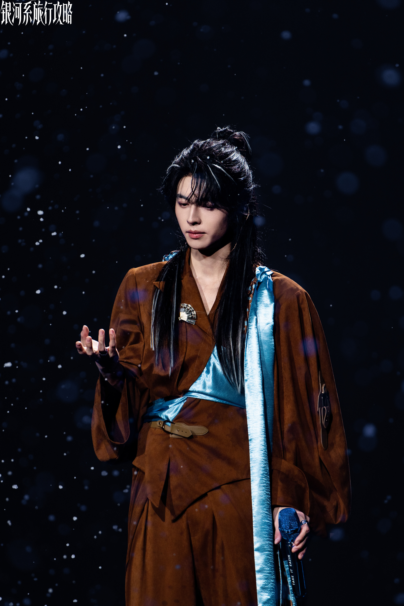 |
相逢有时，相别有时，然每一次与你们度过的时光，都是我生命中最珍贵的涟漪。 |
| 2025.10.21 银河系旅行攻略-杭州站 |
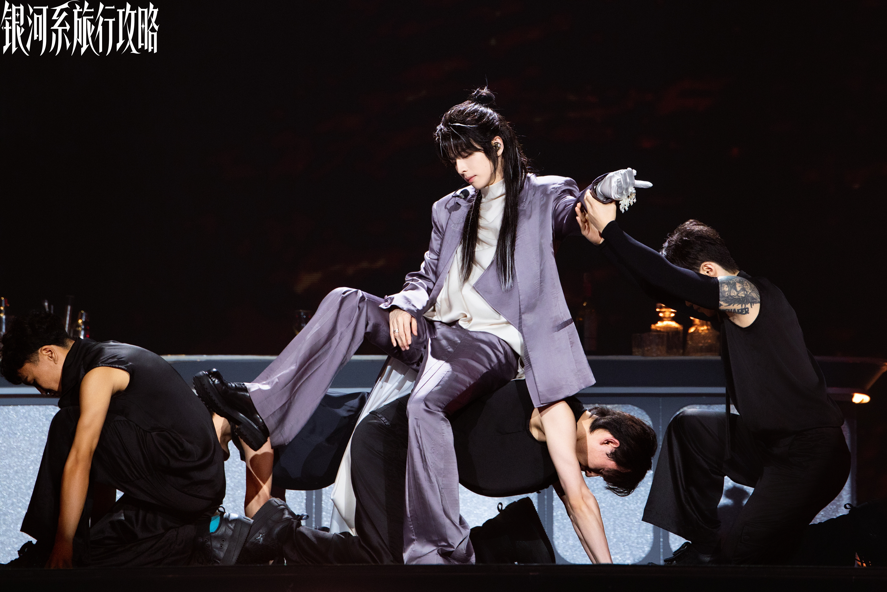 |
说起和阿谶的缘起，那真是一段太长的故事了，下次有机会再与诸君细细道来。 |
| 2025.10.23 银河系旅行攻略-杭州站 |
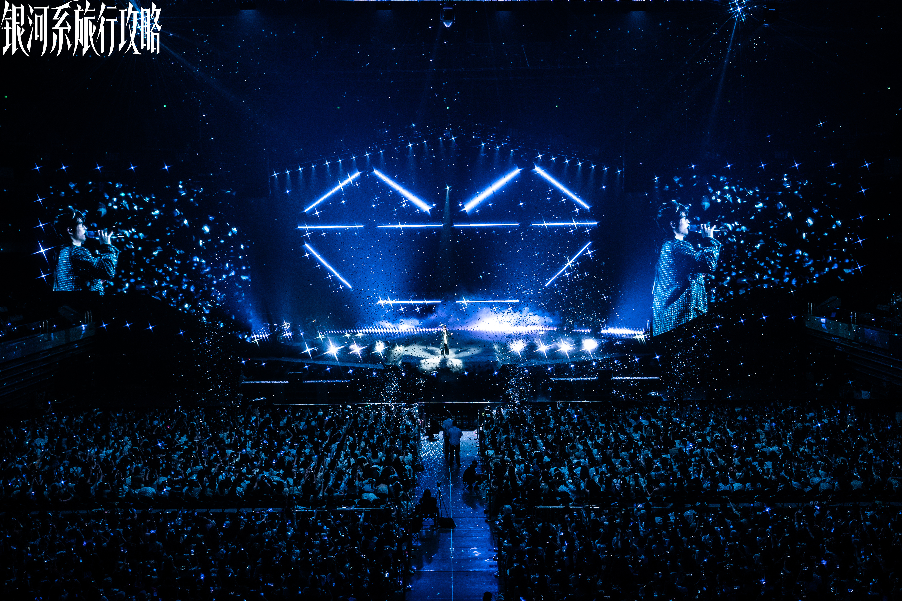 |
“你问我爱你有多深，我说——” ps:今晚月色真美~ |
| 2026.07.23 银河系旅行攻略-北京站 |
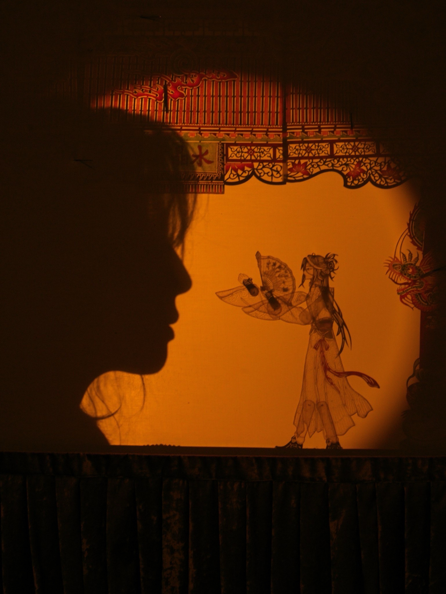 |
谶很期待我从古地球保护区回来的日子。这一次我又给他带了新的礼物。 他没见过皮影，以为是某种原始的全息投影。 我跟他说这不是投影，这是影子。用光穿过皮，照出来的影子。 |
| 2026.07.25 银河系旅行攻略-北京站 |
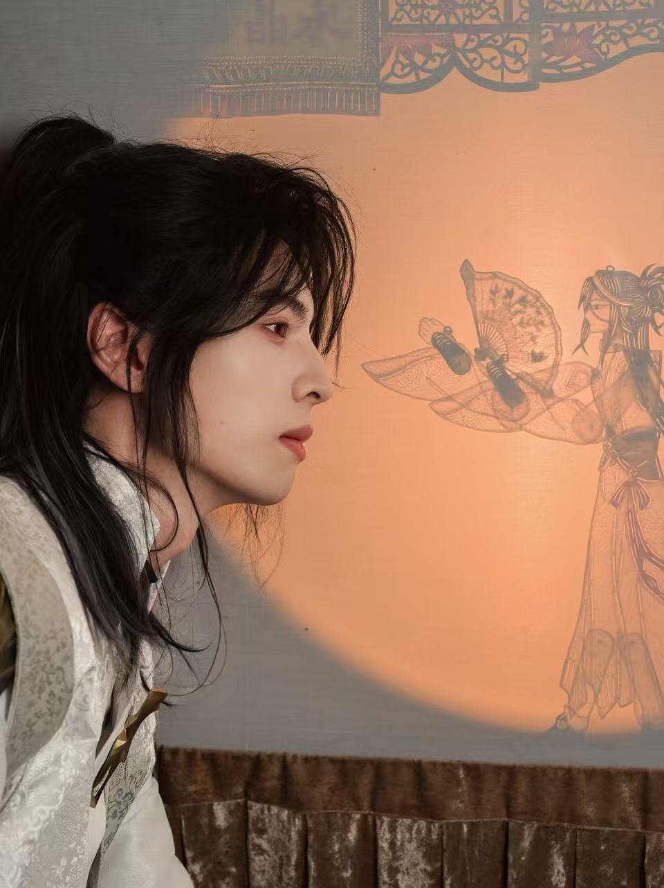 |
度漪日记节选（一）：人在β星，刚下飞船，被自己的账户余额吓清醒了 今天从冥王星轨道回来，账户余额：负数。 度漪啊度漪，你怎么如此堕落，酒吧的赊账还没还完，新债又叠上去了。 而这一切的起因，是三天前我收到一条拍卖行推送——“冥王星前哨站，古地球文物专场”。 我发誓我只是去看看。 我真的发誓。ps: 毫无说服力的发誓 |
| 2026.07.25 银河系旅行攻略-北京站 |
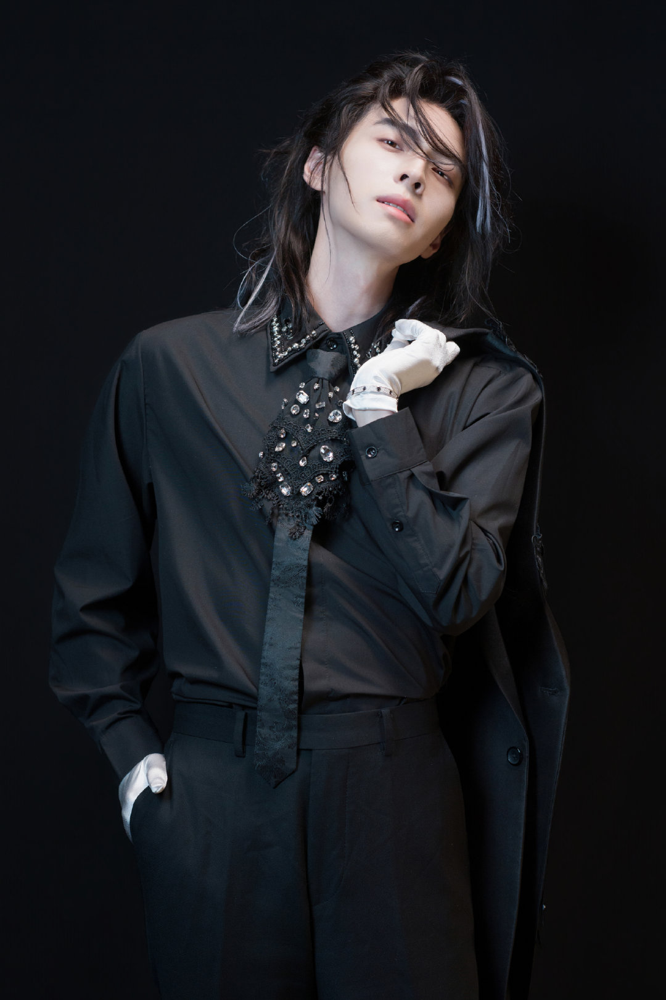 |
“赊的帐要结一下了。” “哈哈哈哈，要钱没有，要命有一条！” “那你卖身还债吧。” “还有这等好事？……银河系中心酒吧001号管家度漪前来服务！” …… “你在干什么，古人类歌者！身为本王唯一认可的对手，怎么屈尊于小小酒吧做管家！你的尊严呢？” “陛下来了！加入我们一起干吧！” “咦？……好的。”ps:又是盛情难却吗 塔塔陛下 OvO |
| 2026.07.26 银河系旅行攻略-北京站 |
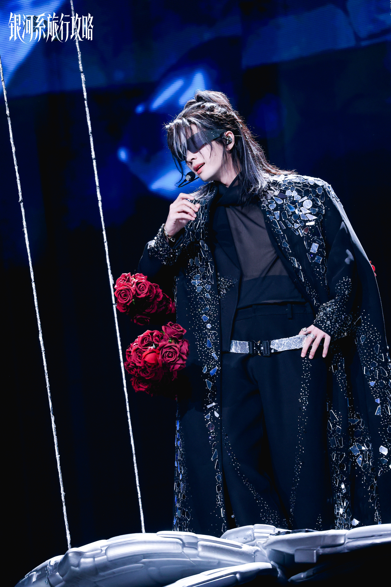 |
度漪日记节选（二）：心跳加速，钱包阵亡 到了拍卖场，我就知道完了。 第一件拍品：一个搪瓷缸子。和我床头那个不是同一个，但很像。 起拍价五十信用点。 我举牌。对面一个泰坦星矿石大亨也举牌。 三百信用点。五百。八百。 一千二成交。 矿石大亨放弃了。他可能觉得为一个旧杯子花一千二不值。 我捧着杯子回座位的时候，手在抖。我摸到了杯底，杯底有一个刻痕，歪歪扭扭的“北京”两个字。不知道是谁刻的，不知道刻的时候是几几年。 拍卖还没结束，我的理智已经结束了 第二件：一把折扇。和我床头那把几乎一模一样。但这一把的扇面上，用蓝墨水画了一枝梅花。墨水褪色了，梅花只剩半个轮廓。 第三件：一本手抄诗集。封面没了，第一页是一首《静夜思》，抄错了一个字：“疑是地上霜”写成了“疑是地上光”。抄的人可能是小孩，也可能是老人，也可能是手抖。 我把诗集抱在怀里，后面的竞价我没听到。我只知道最后是我拍到的。多少钱？不知道。不重要。 ps:那我写一封信保存起来， 未来有没有可能被度漪买下 |
| 2026.07.28 银河系旅行攻略-北京站 |
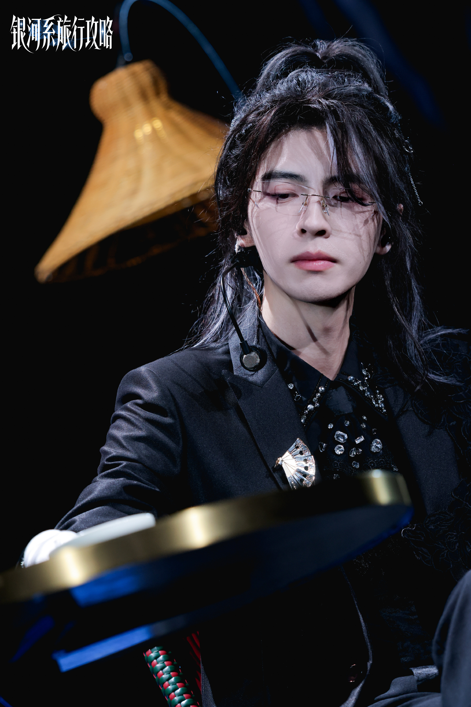 |
度漪日记节选（三）：回到酒吧，面对现实 今天把箱子搬回酒吧。 队长，不对，老板站在门口，看着我抱着一堆东西从飞船上下来。他什么都没说，帮我把箱子接过去。 然后他看到了拍卖行的标签。 然后他看了我一眼。 那一箭，正中靶心。 “没钱结账，有钱拍卖？” 我试图解释：“这些可是文物！古地球文物！搪瓷缸子、折扇、手抄诗集……你知道这个诗集写了什么吗？这是——这是历史，这是——这是——” “你的债务也是历史，”他把箱子放在吧台上，“从上次极夜到现在。很久了。” “请听我一言……” “你每次都说只是去看看。上次也是杯子，上上次是一整套邮票。你知道你的信用记录已经差到被限制高消费了吗？现在出门都坐不了星铁了，只能搭黑船！” “那是我的错吗？那是拍卖行的错！他们为什么偏偏在我穷的时候推送这些？” 他的表情变了。 “你拍那个搪瓷缸子花了多少。” “……一千二。” “市场价两百。” “那就是市场不懂啦。这个缸子杯底刻了北京两个字……” “你卧室里已经摆了四个一模一样的缸子了。” “……你看那个锈，锈不一样……” 他看着我。我看着他。此时卧室窗台那四个搪瓷缸子正排排坐，在循环灯光下安静地反着光。 “……你说得好像有道理。”他终于说。 “就是有道理！” “但你还是要还钱。” “……我知道。” 于是我把搪瓷缸子摆到窗台上，和另外四个一起。五个缸子，五道不同的锈迹。我打算给它们按年代编号，当然不是拍卖的年代，是锈迹的年代。当然我也不知道哪道锈迹更老。我凭感觉来。 手抄诗集放在枕头旁边，折扇挂在床头。那把扇面有梅花，这把扇面什么都没有。两把扇子面对面挂着，像两个沉默的老人在打哑谜。 邮票放在酒吧的展示柜最上层。那个位置本来想放弓箭手的奖杯，他说不用，摆你这些破烂吧。 他嘴上说的是破烂，但他放的时候很小心。 ps:没钱还债被抓来给老公打板（划掉 老板打工了 |
| 2026.07.29 银河系旅行攻略-北京站 |
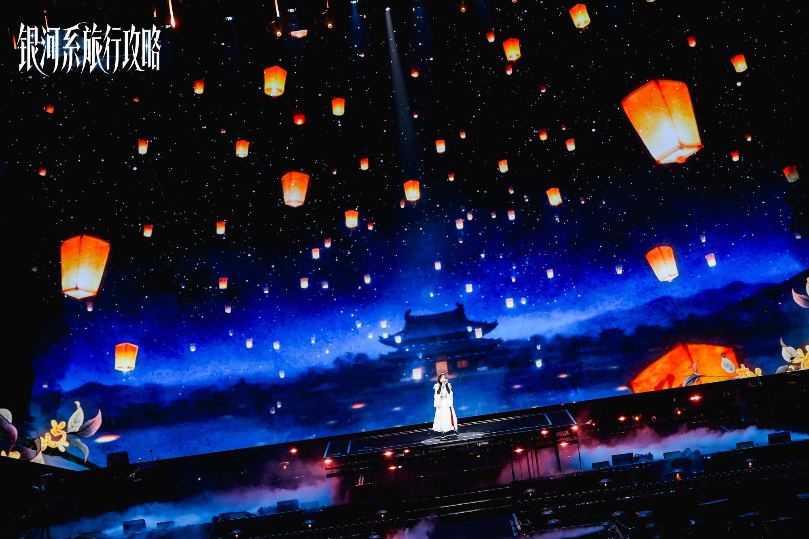 |
度漪日记节选（四）：这个世界上有两种人对你好 今天有客人打趣问我： “收集这些不值钱的东西干嘛？” “完全看不出是拍卖场出来的。” 一个搪瓷缸子，装过某个人的早晨。一把扇字，扇过某个人的夏天。一本手抄诗集，写过一个孩子的童年。 这些东西不仅是文物。它们是时间的碎屑，是活过的证据，是地球上曾经有人在夏天的晚上扇着扇子、捧着搪瓷缸、对着月亮背唐诗的证明。 而我，一个负债累累的古人类歌手兼管家。我愿意把我所有的星际币换成拍卖场的信用点，再去换这些碎屑。 因为总有一天，我会死。我的身体会湮没，我的嗓子会沉默，我的白发会被风吹散。 但那个搪瓷缸子还会在。杯底上的北京还会在。只要它在，就有人知道曾经有一个星球叫地球，地球上有一个城市叫北京，北京有一个人，在杯底刻下了故乡的名字。 我想起第一天上班的那天晚上。打烊。我擦完最后一个杯子，然后把白手套摘下来，坐到他面前。 “我有件事想跟你说。” 他抬头。 “我可能暂时还不清。因为……拍卖会又要开始了。我还是会去。” 他沉默了一会儿。然后说了一句我没预料到的话。 “我又没不让你去。” “咦？老板万岁！” “大不了就是在这里多干个一两年嘛”，他把擦好的杯子一个一个放回架子上，动作很慢，像在深思熟虑下排列某种兵阵，“反正管家服也做了，不穿浪费。” 我看着他。他继续摆杯子。 “看什么？客人对你好评如潮，我还能把你开了不成？” 这个世界上有两种人对你好。一种人劝你改变。另一种人知道你改不了，所以给你做了一套工作服，让你在犯错的路上走得更体面一点。 前者是好人。后者是这个人。ps:管家服不穿浪费！多穿！爱看！ |
| 2026.07.30 银河系旅行攻略-北京站 |
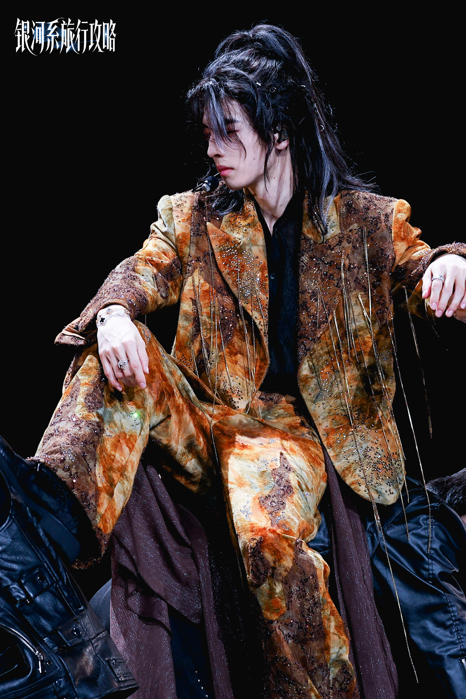 |
度漪日记节选（五）：巨星请我去看他的演唱会 那位巨星又来了。 这次他带了他的演唱会经纪人，一个精灵族的瘦高个，看不出种类，尖耳朵，银色长袍，全程皱眉，好像这间酒吧的空气会影响他的光合作用。 歌王坐在吧台边，用指尖敲了敲台面：“给我一杯水。” “什么水？” “普通的。不加东西。” 我给他倒了一杯自来水。他端起来闻了一下，鳃片微微翕动，然后放下：“这不是水。” “这是飞船里的水。” “水应该有来处。有流向。有鱼游过的痕迹。这不是水，这不过是一种，”他停了一下，选了一个词，“工业品。” “你还喝不喝。” 他看了我一眼。端起杯子，喝了。 然后说：“我下个月在天狼星区开巡演。” “恭喜。” “你来。” “……什么？” “来听，”他把杯子放下，站起来，走到门口的时候停了一下，没回头，“想知道你的评价。” 精灵族经纪人全程欲言又止，最后还是没忍住，出门前小声对我说：“他可从来没有请过竞争对手来听自己的演唱会。” 我说我不是他的竞争对手。我是古人类。古人类歌手在整个星系连前一万名都排不进去。 “我也是这么想的，不入流的小众歌手罢了，”经纪人白了我一眼，又犹豫了片刻，神情复杂地说， “但他不是这么想的。”ps:宿敌就是妻子！ |
| 2026.07.30 银河系旅行攻略-北京站 |
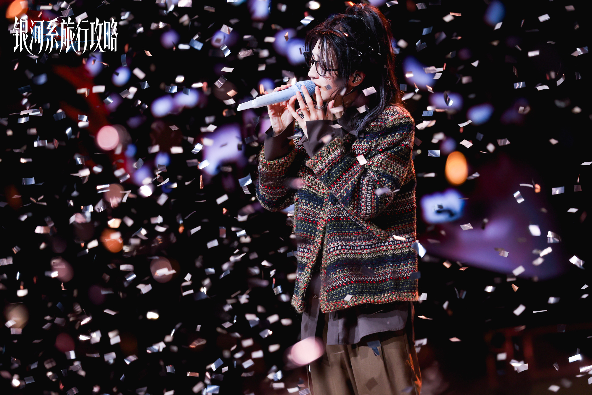 |
度漪日记节选（六）：海 他站起来走了。走到门口，没回头。 “那首曲子叫什么。” “《渔舟唱晚》。” “什么意思。” “渔舟在傍晚时传来歌声。” 沉默。 “地球的海，是什么颜色。” 我说有时候是蓝的，有时候是灰的，日落的时候是金的。 他背对着我站了很久。他可能在想一片海的颜色。 “和我的海一样。” |